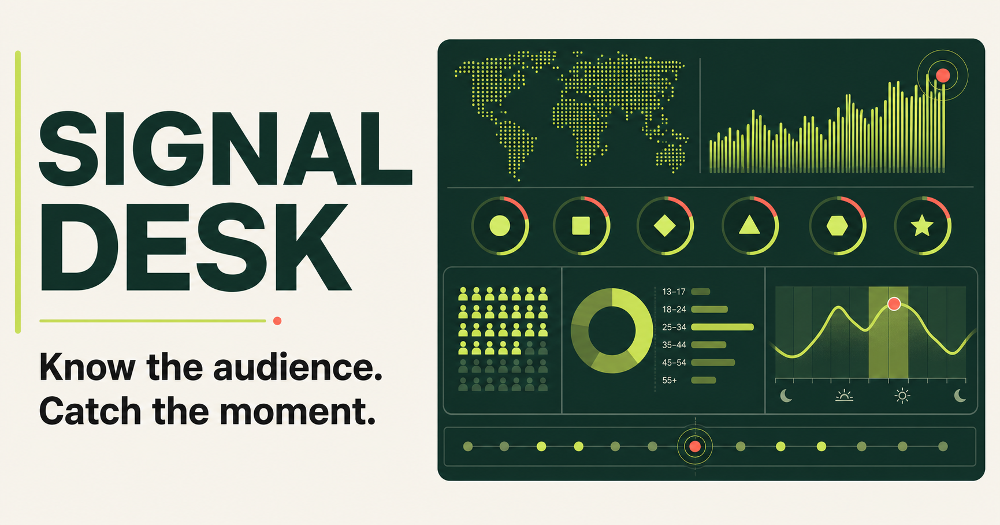
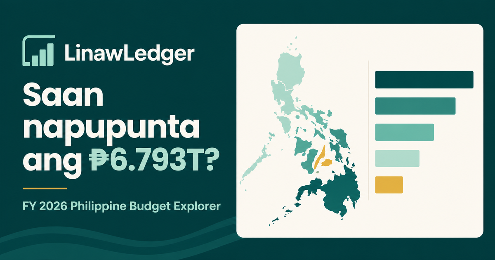
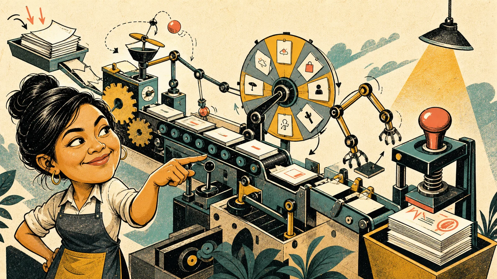
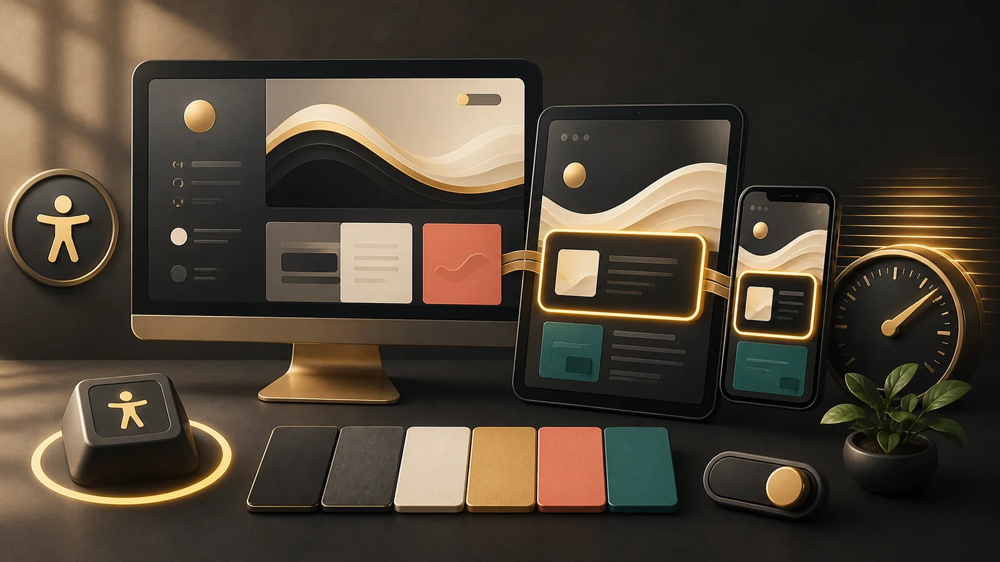
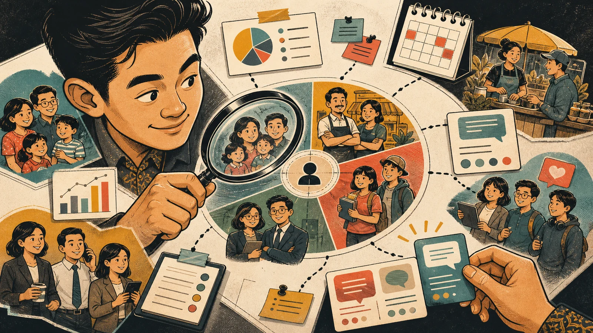
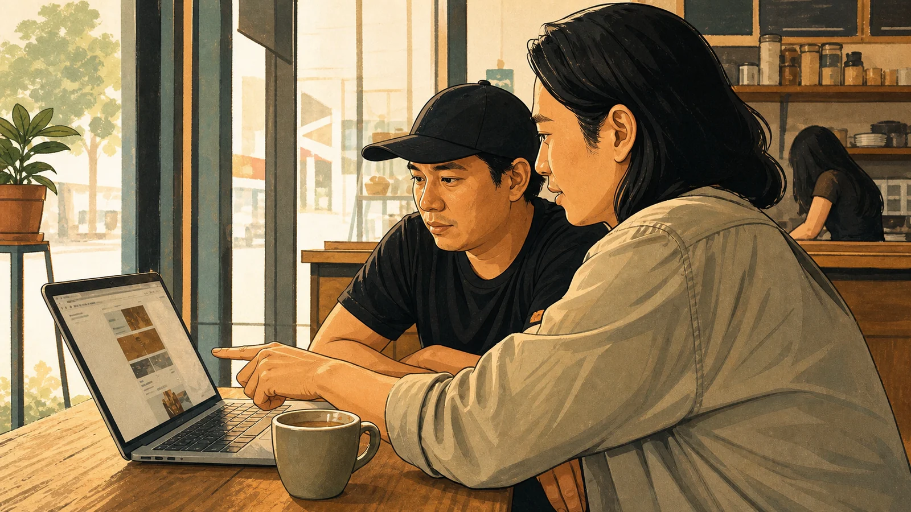
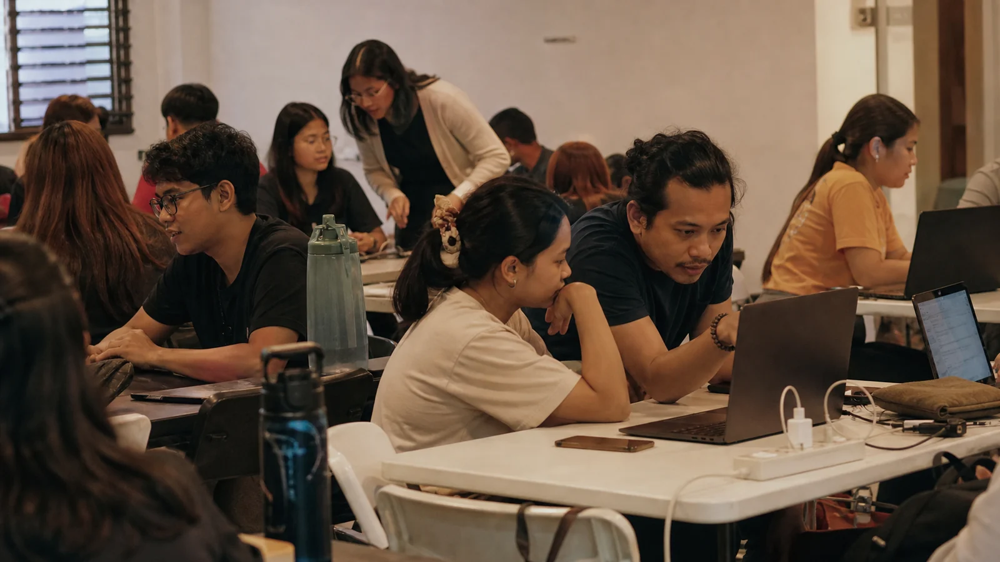

Clear message, clear next step.
Visual rhythm built for attention.
Content that keeps moving.
✦
VIEW CAMPAIGN ↗


SOFTWARE ENGINEER • AI & AUTOMATION |

I’m Luke Mark Leona, but you can call me Luke or Lukas. a Philippines-based software engineer, web developer, and AI automation specialist building connected digital systems for real business needs.
My experience spans responsive web development, software engineering, AI-assisted workflows, n8n automation, API integration, and data analytics. I connect websites, business tools, data sources, and intelligent automation into maintainable solutions that reduce manual work, improve visibility, and support measurable business goals.
I connect software engineering, web development, AI automation, APIs, and data into one coordinated process built around the same goal.
Responsive websites, WordPress builds, front-end development, LMS implementations, technical maintenance, and performance optimization.
AI-assisted processes, n8n workflows, Zapier automations, API connections, and reliable systems that reduce repetitive work.
Maintainable applications, reusable components, system integrations, debugging, testing, and technical problem-solving across the stack.
Data preparation, analytics, dashboards, database work, and API-driven integrations that turn information into useful decisions and actions.
I choose tools for the problem, not the other way around. Each platform has a clear role in one connected workflow.
I start by understanding the problem, then choose the right approach, tools, and technology to solve it.
Clarify the goals, audience, current problems, constraints, and what success should look like.
Choose the structure, workflow, technology, priorities, and approach that best fit the goal.
Turn the strategy into a working website, analysis, design, workflow, or digital solution.
Review results, identify friction, measure performance, and improve what matters.
My advantage is not simply knowing many tools. It is being able to connect design, development, data, SEO, and digital operations around one problem.
Creative, technical, analytical, and digital work can be approached as one connected system.
Technology is selected based on the objective, not the other way around.
I aim to communicate clearly so clients understand what is happening and why it matters.
Delivery is not always the finish line. Performance and feedback can guide what should improve next.
Whether you need a website, analytics, digital support, SEO improvements, or a better workflow, the best place to start is by understanding the problem.
Explore how I use web development, design, SEO, data, and automation to solve practical problems. Then see where I have applied those skills.
I build responsive digital experiences using WordPress, front-end technologies, CMS platforms, and custom development, with a focus on usability, performance, maintainability, and business goals.
Strategy, design and technology working together.
You do not need to know which technical service you need. Start with the outcome.
Start with Web Development, then connect design, SEO, analytics and ongoing optimization based on what the business needs.
Providing cross-functional digital support including website development, SEO, analytics reporting, graphic assets, content management and technical maintenance.
Supporting community marketing, event visibility, communications, digital campaigns and cross-team initiatives within the Philippine Python community.
As an Associate Software Engineer, supported enterprise production systems for 15 months across four delivery areas: integration, data management, testing and deployment. Investigated Oracle, Unix and SQL workflow issues through resolution, helping improve release readiness, issue traceability and operational continuity.
Delivered website creation, SEO implementation, marketing assets, content support and analytics dashboards across multiple digital responsibilities.
Explore selected AI automation, software engineering, web development, API integration, and data analytics work, from the first idea to the working result.
Showing all 24 projects
A Baguio itinerary generator that helps travelers build a calmer, more personal trip plan with local discovery and conversational guidance.


Clear message, clear next step.
Visual rhythm built for attention.
Content that keeps moving.
Clear message, clear next step.
Visual rhythm built for attention.
Content that keeps moving.
An interactive website vision tool for mixing layouts, typography, palettes, imagery, and motion before development begins.
Campaign graphics, social assets, promotional visuals, motion pieces, and AI-assisted creative production.
AI workflows, web applications, API integrations, analytics, or connected digital support. Every project starts with a problem worth solving.
Notes on AI automation, software integration, accessible websites, data, marketing, SEO, and the community experiences that shape how I work.

01Practical workflows that reduce repetitive work without turning every process into an AI experiment.
A plain-language guide to connecting apps, reducing duplicate entry, and designing reliable information flows.

03Core accessibility, performance, and content practices that improve usability and support stronger search visibility.

04Use audience fit, timing, content context, and honest public signals to make better publishing decisions.

05How a well-planned website builds credibility, improves discoverability, and turns attention into action.
A practical path from scattered records to clear questions, useful evidence, and decisions a team can act on.
Build a useful, technically sound presence that helps the right people find and trust your business.

08What contributing to Python Philippines taught me about confidence, communication, leadership, and responsibility.